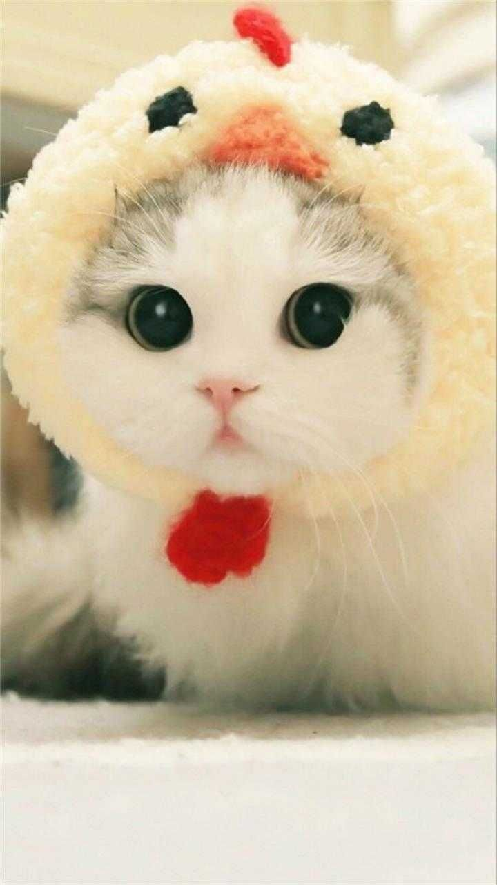

Puppy cat (or puppy-like cat, canine-like cat, dog-like cat, etc.) is a term used to refer to specific breeds of domestic cats that have unusual behavioral tendencies that are reminiscent of young domestic dogs. These are within the scope of feline behavior, and may be enhanced through selective breeding. These behaviors, not specific to any breed, include following people around from room to room, the desire to receive frequent moments of physical affection such as being held and petted, a lack of aggression toward some fellow animals, and a placid nature. While these attributes are found desirable for owners interacting with their cats, problems can occur when the felines are exposed to dogs and strange people, with the cats possibly being too trusting and too friendly for their own good. Breeds known for these canine behaviors include the Abyssinian, Burmese, Maine Coon, Manx, and Ragdoll, though dog behavior traits can appear regardless of breed. You can see the picture below... Let's see !
Breeds
The cultural assumption that cats are distant from people and lack affection compared to dogs has complications. Animals have individual characteristics based on their environment, particularly their past interactions with people. The nature of selective breeding for both canines and felines varies dramatically across different human cultures as well, with highly distinctive traits (fertility, lifespan, speed, etc) receiving emphasis depending on the historical context.
Image
